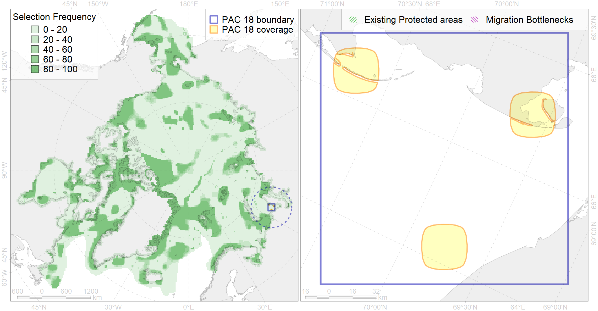

Region 18
Region 18
“ArcNet” scenario 33 achievement for region 18.
Use Accenter for advanced mode.

0
CFs inside of Region completely
0
CFs inside of Region at quarter
0
Complete-targets achievement by Region
0
Half-targets achievement by Region
| CF | Name | Target Achievement for Region | Proportion of Target Achievement in Region | Amount Proportion in Region |
|---|---|---|---|---|
| 1007 | Atlantic Walrus haulouts in Pechora and Kara region | 9.1% | 8.8% | 8.7% |
| 7065 | I.1.1.2. Coastal domain in the south-western Kara Sea | 20.4% | 15.7% | 3.9% |
| 7076 | I.1.3.4. Estuaries and lagoons | 10.8% | 5.0% | 3.7% |
| 7049 | Pechora Sea - Baidara Bay transitional zone | 8.8% | 4.3% | 2.5% |
| 8033 | Salt marshes of the Kara Sea LME | 4.9% | 4.9% | 2.5% |
| 3011 | Fast ice distribution in the Western part of the Kara Sea | 19.3% | 2.9% | 1.4% |
| 6020 | Long-tailed duck (Clangula hyemalis) North East Atlantic moulting&migration stopovers | 0.8% | 0.8% | 0.8% |
| 3116 | polynya Yamal | 5.6% | 1.9% | 0.7% |
| 4072 | Range of the Pechora herring (Clupea pallaii suworowi) (F 9) | 5.0% | 1.4% | 0.7% |
| 2049 | Ringed seal whelping areas in the Kara Sea | 1.9% | 1.0% | 0.5% |
| 4043 | Range of Nawaga (Eleginus nawaga) (F37) | 3.8% | 1.1% | 0.5% |
| 4015 | Feeding area of the Broad whitefish (Coregonus nasus), American populations (F 19) | 1.4% | 1.2% | 0.5% |
| 4010 | Feeding area of the Muksun (Coregonus muksun) (F 15) | 1.1% | 1.1% | 0.4% |
| 4014 | Feeding area of the Siberian whitefish (Coregonus pidschian) (F 18) | 1.5% | 0.9% | 0.4% |
| 4018 | Feeding area of the Vendace, Least cisco (Coregonus sardinellа), Euro-Asian populations (F 20) | 1.2% | 0.6% | 0.3% |
| 4021 | Feeding area of the Inconnu (Stenodus leucichthys nelma), Euro-Asian populations (F 22) | 0.9% | 0.7% | 0.3% |
| 9028 | polar bear denning areas of KS (Kara Sea) subpopulation | 0.4% | 0.4% | 0.3% |
| 6006 | Brent goose (Branta bernicla bernicla) breeding&moulting grounds | 1.7% | 0.5% | 0.3% |
| 4008 | Feeding / nursery area of the Arctic Cisco (Coregonus autumnalis), Eurasian populations (F 14) | 0.6% | 0.6% | 0.3% |
| 4052 | Range of the Fourhorn Sculpin (Myoxocephalus quadricornis) (F 45), American populations | 7.5% | 0.5% | 0.3% |
| 4030 | Feeding area of the Arctic charr (Salvelinus alpinus), anadromous populations (F28) | 0.6% | 0.5% | 0.2% |
| 2011 | Bearded seal whelping areas in the Kara Sea | 0.8% | 0.8% | 0.2% |
| 5007 | Beluga of the Barents-Kara-Laptev Sea stock general distribution | 0.7% | 0.4% | 0.2% |
| 4006 | Feeding/nursery area of the Pacific rainbow smelt (Osmerus dentex) (F12) | 0.8% | 0.3% | 0.2% |
| 4058 | Range of the Arctic flounder (Liopsetta glacialis) (F48) | 2.1% | 0.3% | 0.1% |
| 4076 | Fish zoogeography, Arctic Region, High-Arctic Shelf Province, N Barents – Kara-Sea District | 1.4% | 0.4% | 0.1% |
| 3038 | Marginal Ice Zone distribution in July in the Kara Sea LME | 0.3% | 0.3% | 0.1% |
| 7066 | I.1.1.3. Shelf plains | 2.5% | 0.2% | 0.1% |
| 4057 | Range of the American Plaice (Hippoglossoides platessoides) (F 47), American populations | 2.0% | 0.2% | 0.1% |
| 4049 | Range of the Haddock (Melanogrammus aeglefinus) (F 42) | 0.9% | 0.1% | 0.1% |
| 3027 | Marginal Ice Zone distribution in April in the Kara Sea LME | 0.4% | 0.1% | 0.0% |
| 4003 | Range of the Atlantic Capelin (Mallotus villosus) (F10) | 1.3% | 0.1% | 0.0% |
| 9010 | polar bear of the KS (Kara Sea) subpopulation distribution | 0.1% | 0.1% | 0.0% |
| 7067 | I.1.1.4. Shelf troughs | 0.5% | 0.1% | 0.0% |
| 4017 | Feeding/ migration area of the Greenland Shark (Somniosus microcephalus) (F1) | 0.1% | 0.0% | 0.0% |
| 4041 | Range of the Polar Cod (Boreogadus saida) (F35) | 0.1% | 0.0% | 0.0% |
| 5112 | Arctic Cetaceans (beluga, bowhead, narwhal) winter habitats as predicterd by MIZ | 0.0% | 0.0% | 0.0% |
| 4045 | Feeding/migration area of the Pink Salmon (Oncorhynchus gorbuscha), native distribution (F23) | 0.2% | 0.0% | 0.0% |
| 1009 | Atlantic Walrus Summer Distribution in Pechora and Kara region | 0.0% | 0.0% | 0.0% |
| 4054 | Range of the Shorthorn Sculpin (Myoxocephalus scorpius) (F 46), European populations | 0.3% | 0.0% | 0.0% |
| 3012 | Fast ice distribution in the Pechora Sea | 0.0% | 0.0% | 0.0% |